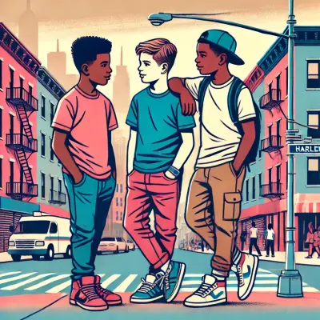

Work Samples
These selected responses highlight the project's approach to exploring love through AI-generated imagery and diverse personal reflections. Each response reflects different perspectives, backgrounds, and experiences, showcasing the depth and variety of contributions.

How has technology impacted your experience of love?
Read MoreTomoko, She/Her, 22, Queer, California

How do you nurture love in long-term friendships?
Read MoreJustin, He/Him, 52, Father, Son, Husband, Musician, NYC